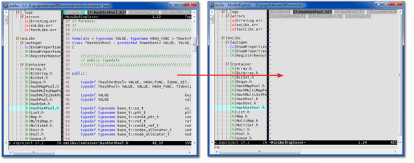

Loose window when use “:q” close buffer in edit-window
Issue
When you use “:q” close a buffer in edit-window, you will see the scene like the picture shows below:

Solution
Never use :q in edit-window. Instead, use <leader>bd You need to map the the <leader>bd as the code below in your .vimrc.
nnoremap <unique> <Leader>bd :call exUtility#Kwbd(1)<CR>
The solution is come from the VimTip 1119: Use Vim like an IDE. But I changes some of the code so that it works correctly with other plugin window.
I run the :Up[date] command, but nothing happend
Issue
I install the exVim in MS-Windows When I run the :Up[date] command, a command line window flash out then disappeared like nothing happend. And I check the .vimfiles folder in my project, no file generated.
Solution
- check if you install the tools below:
- gawk
- id-utils
- check if you create and set the environment EX_DEV.
- check if you set the installed path of the tools above into environment.
can’t Create ID in c:\ in Win32, got error message “mkid: can’t get working directory: Permission denied”
It is a bug for id-utils, looks like it can’t create ID in c:\, I don’t have time to debug the mkid win32 souce code, so currently the solution is don’t put you project in c:\, in d:\ or other instead :(.
If some one know this problem, and have a better solution, please tell me.
I got “Error: tag not found ===> xxx” when I use exTagSelect search a tag.
Issue
I successfully create the tag file in .vimfiles by :Up[date] or running quick_gen_project, but when I running the project, and use exTagSelect plugin search a tag, it shows the message: "Error: tag not found ===> xxx".
Solution
First check if the tag you find is in the tag file. If yes, it probably because you miss setting the script below in your rc file.
Add the following auto-command to your vimrc:
au BufNewFile,BufEnter * set cpoptions+=d
When I use :GS search the text “vector.h”, it give me a blank page.
Issue
I use :GS command doing global search in stl project, I search text “vector.h”, but no result lists in the plugin window. I’m sure the project in somewhere exists text “vector.h”. Also I try “vector::push_back” it give me the same result. It looks like :GS can’t accept signs in the search pattern.
Solution
Yes, you are right! The :GS can only accept alphabetic character and digit in a word, you even can’t use <space>, and search them one by one.
So if you want to search “vector.h”, you can first use :GS search “vector” (use :GSW would be much better). Then in the search result, type /vector.h and press <leader>r to pick up thoes item you need. Same as “vector::push_back”. Search “vector” or “push_back” first, then apply your own pattern in the listed results.
You will get use to it, finally love it :p
When I use :SHL I got a blank pages in my web-browser
Issue
When I use :SHL command to convert a source file into html, I got a blank page.
Solution
Copy %EX_DEV%\exVim\toolkit\src-highlight\ex**.** to your src-highlite share directory. in win32 it could be: %EX_DEV%\tools\GnuWin32\share\source-highlight.
I can’t used \ws,\wd,\we….
Issue
When I use <leader>ws, <leader>wd… to put a comment segement, define or some other similar stuff, it prompt a error said b:ECcommentOpen and b:ECcommentClose undefined.
Solution
You probably download and install only ex-plugin package, but this feature need EnhancedCommentify plugin. Click here http://www.vim.org/scripts/script.php?script_id=23 to download and install it.
When create ctags of boost library, it keep updating but never stop
Issue
When update ctags in boost project, it will keep updating, the tags file keep increasing but never stop.
Solution
It could be a bug in ctags in parsing some cpp templates. Go to the boost/typeof directory, rename the vector50.hpp, vector100.hpp, vector150.hpp, vector200.hpp to other name which ctags can’t detected them by its language map, (e.g vector50.dummy). Then update the project.
can’t open new .vimentry file when in ex-plugin window (except exProject window)
Issue
When I already in a exVim project, and try to use :e command to open another exVim project (.vimentry file), it will be failed if I did this operation in ex-plugin window.
Solution
Always do this in edit-window.